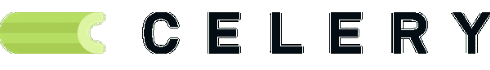
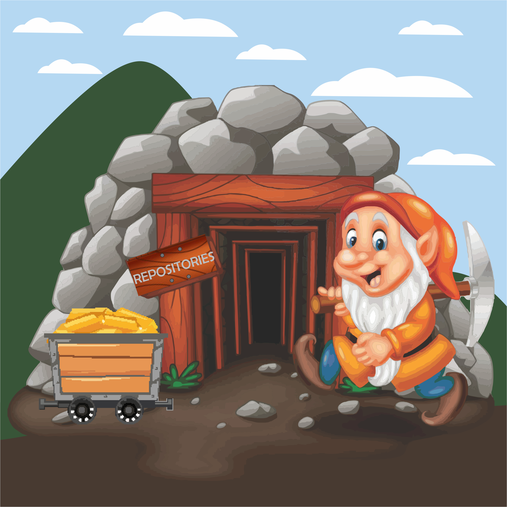

Why mining repository Issues?

The importance of user feedback and community work can define the success and prosperity of the repository. Issues are a great ally of open source repositories due to their relevant information for improving the repository as well as bug fixes.
In this context, several studies on Issues have been developed in the academic community. However, for the study of issues and their mining to be done more effectively, it is necessary to automate the mining process.
The GrumPy Tool seeks to help researchers in order to facilitate the automated collection of Issues in GitHub's open-source repositories, in order to provide the data through a friendly web system with statistical reporting.
GrumPy tool development
Joselito Mota Jr
Master student
The development of the GrumPy tool is part of Joselito Mota Jr dissertation. Joselito is a Msc. student in Computer Science at the Graduate Program in Computer Science (PGCOMP) at the Federal University of Bahia (UFBA), under the supervision of Professor Dr. Ivan Machado. The development of the tool had the collaboration of Railana Santana, PhD student in Computer Science at UFBA. Contact email: nomeDoUsuario(at)ufba(dot)brContact Us
GrumPy tool is part of a work developed by the research group Aries Lab at the Federal University of Bahia (UFBA)
Our Address
Universidade Federal da Bahia
Institute of Mathematics and Statistics
Av. Adhemar de Barros, s/nº - Ondina, Salvador - BA, Brazil, 40170-110
Aries Lab website
https://arieslab.github.io/arieslab/Aries Lab website
arieslab@gmail.com